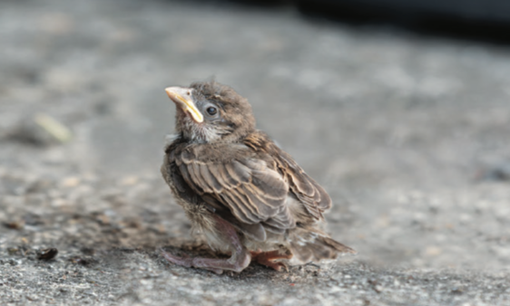
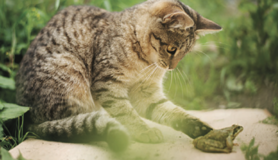

Grammar: Past Simple vs. ContinuousVocabulary: AnimalsPronunciation: Weak forms (was/were)Skills: Listening & Writing
Warm-up: Vlogs
Q: What's your favourite animal?
Watch the video. Number the animals in the order you hear them (1–7).
dog
horse
meerkat
orangutan
panda
parrot
turtle
What's your favourite animal?
Listening: animal rescues
1A. Look at the photos. Which animals are in danger? Why?


1B. Listen to a radio phone-in about animal rescues (2.01). Match each person to the animal they rescued.
Freddie's story
Bea's story
Lucas's story
a dog
a baby bird
a tortoise
1C. Read the story summaries. Each one has two pieces of incorrect information. Can you find them before you listen again?
Freddie's story: A couple saw a baby bird on the road. The man picked up the bird and put it on a gate. A cat tried to play with the bird. The woman cried because she was happy.
Mistake 1:
Mistake 2:
Bea's story: A woman saw something in the road. She stopped her car and found a tortoise. Some other drivers were unhappy because her car was stopping the traffic. She picked up the thing she saw and put it on the side of the road.
Mistake 1:
Mistake 2:
Lucas's story: A dog was in a garden. A car hit the dog and the dog ran away. The owners couldn't find the dog. A few weeks later, someone found the dog near a bridge. He rescued the dog.
Mistake 1:
Mistake 2:
1D. Listen again and check your answers together with your teacher.
Grammar: past simple and continuous
2A. Look at these sentences and find the verbs.
1. One day, we were walking down a street and we saw a baby bird on the side of the road.
2. While we were watching, a cat came out and jumped on it.
3. I was driving home in the early evening and I saw something on the side of the road.
4. Anyway, last year Ezra was playing in the garden when a car crashed into the fence.
2B. Write the verbs you found in the correct column below.
Past simple
Past continuous
How do we form the past continuous?
2C. Choose the correct words to complete the rules.
1. We use ... for the main events in a story.
2. We use ... for the background situation, at the start of the story.
3. We use ... for the action that takes a longer time.
4. We use ... with the past simple.
Pronunciation: weak forms was, were
3A. Listen (2.02) and write the sentences you hear.
1.
2.
3.
4.
3B. Listen again and choose the correct alternative.
1. In the past continuous, was and were are...
2. We pronounce was as...
3. We pronounce were as...
3C. Make two of your own questions using the past continuous (example: What were you doing this time yesterday?).
Question 1:
Question 2:
3D. Ask and answer your questions together with your teacher.
Vocabulary: animal body parts
4A. Match each word to its meaning.
feather
fur
shell
skin
tail
trunk
web
wing
the part at the back of an animal's body, e.g. a dog's ___
the soft hair covering an animal's body, e.g. a cat's ___
one of the soft light parts covering a bird's body
the skin between the toes on some animals' feet, e.g. a duck's ___
the hard outer covering of an animal, e.g. a tortoise's ___
an elephant's long nose
the outer covering of a person's or animal's body
the part of a bird's body it uses to fly
4B. List seven animals that aren't shown on this page.
5. Guessing game: think of an animal — your teacher will ask yes/no questions to guess it. Then swap roles!
Speaking: news headlines
6A. Read the headlines. What do you think happened?
"Duck to painter: You're my hero!"
"Lost teddy bear rescued from bus"
"Who says dogs can't fly?"
"Firefighters catch runaway monkey"
"Elephant surprises supermarket shoppers"
"Pet rabbit returns after 50km journey"
6B. Info-gap story: your teacher will give you a story to tell your partner.
Writing: an animal rescue story
7A. Read the beginning of a story. The same animal is missing three times — guess it, then decide which headline from 6A it matches.
I'm a teacher. Last year I took my primary school class to the zoo, and one of the workers at the
zoo was showing us a . The
was in a large cage, and he was
jumping around and trying to get out. While the worker was getting some food for him from another
room, one of the children — one of my students — opened the cage. I ran over to close it, but at
that exact moment, the ran out.
Which headline matches?
7B. What else do you think happens in the story?
7C. Now write your own story about an animal rescue (5–8 sentences). Try to use the past simple and past continuous.